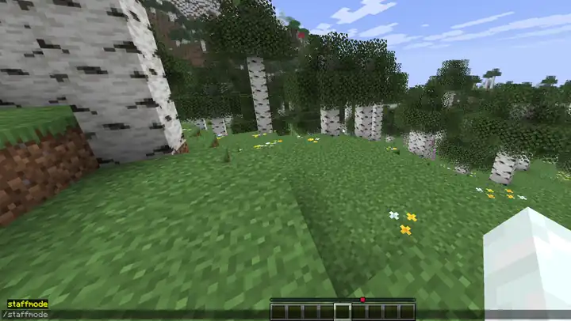
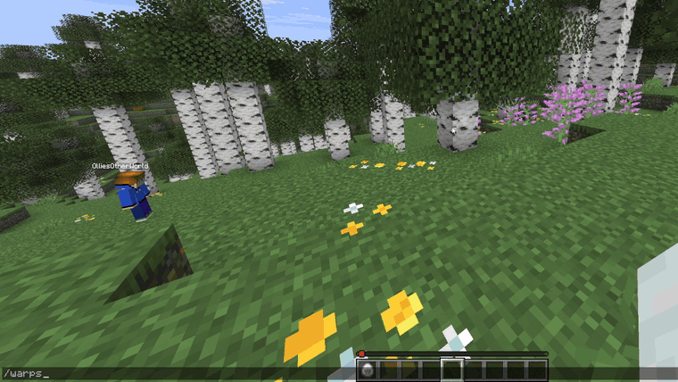
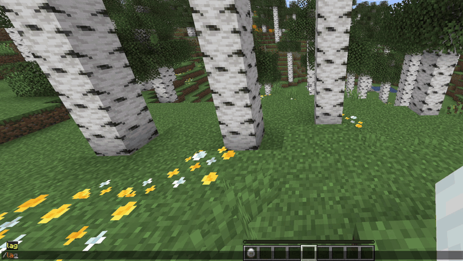
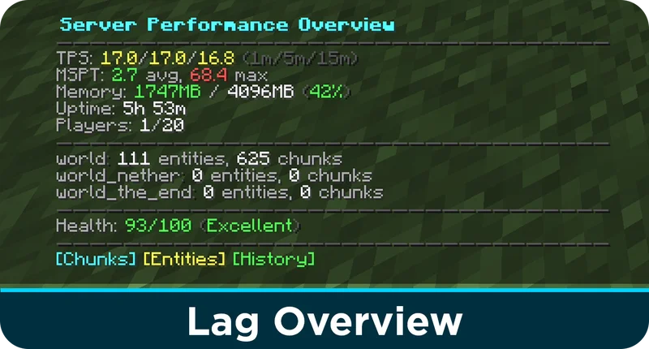
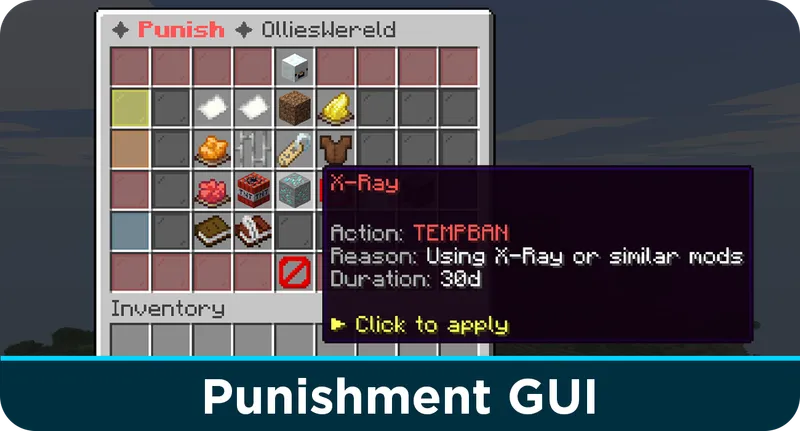
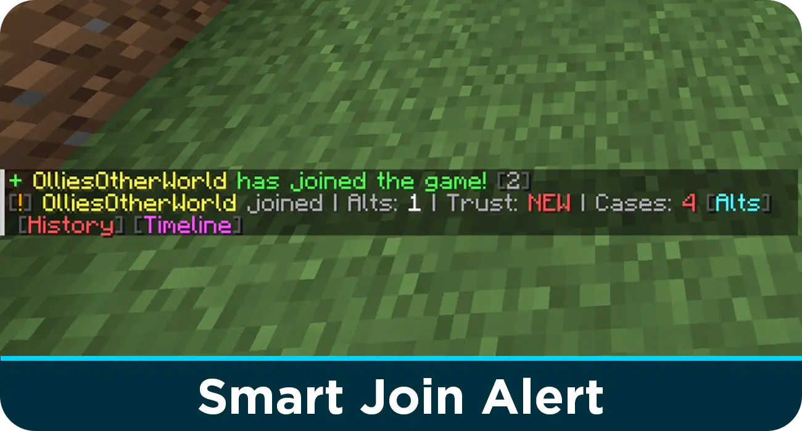
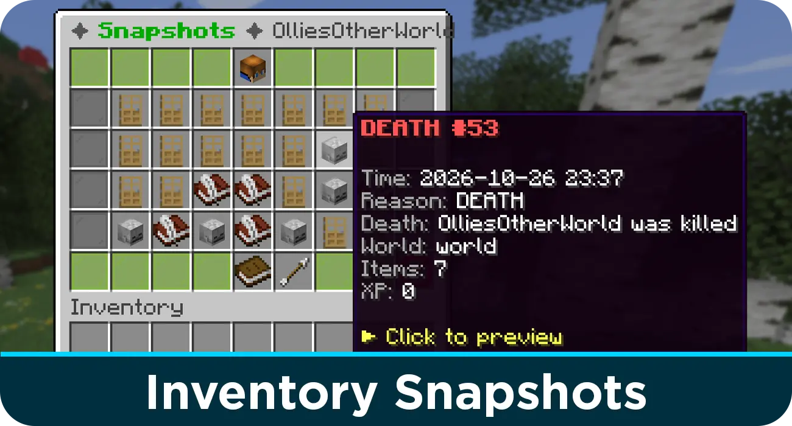
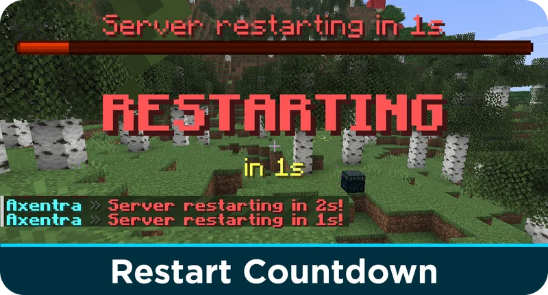
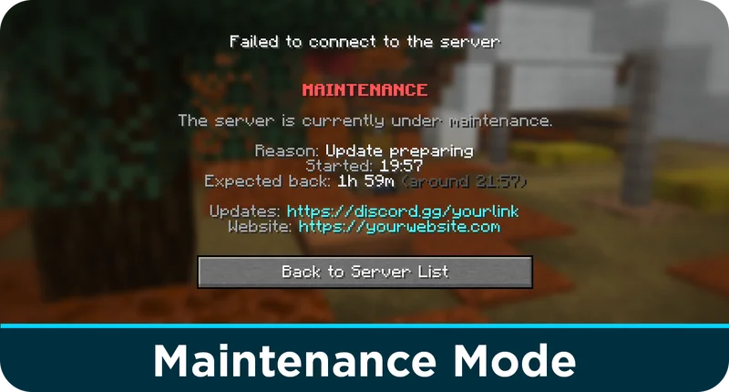

Axentra Moderation, lag tools and staff mode in one free plugin
110+ commands for running a Minecraft server — punishments, player protection, server health, restarts, maintenance, homes and warps. Lightweight, with no dependencies.


One jar instead of five
Axentra covers the plugins most servers install one by one
Essentials commands
Homes, warps, TPA, spawn, /back, nicknames, fly, heal and virtual workbenches.
Punishments & bans
Bans, mutes, warns and IP bans with a punishment GUI, cases and full history.
Staff mode & vanish
A staff hotbar, vanish, reports, duty tracking and staff chat.
Lag monitoring & cleanup
TPS and MSPT, the heaviest chunks, lag alerts, item cleanup and entity limits.
Restarts & maintenance
Scheduled restarts with a countdown, and maintenance mode with a custom MOTD.
Player protection
Inventory snapshots, alt and VPN detection, trust levels and freeze.
Everything you need in one plugin
Replace multiple plugins with a single, lightweight server management solution
Server Health New in 1.8.0
A /lag dashboard with TPS, MSPT and memory, the heaviest chunks with click-to-teleport, a 0–100 health score, TPS history, staff alerts on lag, automatic item cleanup and per-chunk entity limits.
Restarts & Maintenance
Scheduled and daily restarts with a bossbar countdown, and a maintenance mode with a custom MOTD, whitelist and automatic end time.
Player Protection
Inventory snapshots with restore GUI, trust levels, alt and VPN detection, freeze and tempfreeze, and a full player timeline.
Staff Tools
Staffmode with a tool hotbar, vanish with ghost effect, duty tracking, a reports GUI, staff statistics and smart join alerts.
Smart Moderation
Punishment GUI with templates that escalate on repeat offenses, case system, history GUI, staff notes, audit log and chat log snapshots.
Homes, Warps & Teleport
Homes and warps with GUIs, random teleport, TPA requests, spawn, /back and staff teleports. Reorder and rename warps right in the menu.
Chat & Utility
Private messages with social spy, staff chat, broadcast, mute/slow/clear chat and nicknames — plus fly, heal, virtual workstations, weather and time control.
Modular & Configurable
30 toggleable modules, 5 config files, an in-game settings GUI, fully configurable messages, live reload and configs that update themselves.
See it in action
Built for staff, designed to be intuitive

Vanish, teleport to players, freeze them, check their inventory and history, and punish — all from one hotbar.

Reorder warps with shift-click, change icons with a hotbar key, and teleport — without leaving the menu.

Find the heaviest chunks with /lag chunks, then check how the server performed over time in /lag history.


TPS, MSPT, memory, per-world entities and a health score with one command.


One-click punishments from templates that escalate automatically on repeat offenses.


Staff instantly see alts, VPN usage, trust level and open cases when a player joins.


Lost items after a death or bug? Browse snapshots and restore them in one click.


Players get a bossbar, sounds and a title before every scheduled restart.


A clear screen with the reason, start time and when the server is expected back.


110+ commands, one plugin
A few highlights — every command has its own permission
/lag chunksServer healthThe 10 heaviest chunks, with click-to-teleport/restart schedule <time>RestartsRestart with a bossbar countdown and warnings/punish <player>ModerationPunishment GUI with escalating templates/history <player>ModerationEvery case a player has had, in a GUI/staffmodeStaffVanish plus a hotbar full of staff tools/restoreinv <player>ProtectionBrowse and restore inventory snapshots/warpsWarpsWarps GUI you can reorder and rename in place/tpa <player>TeleportTeleport requests with accept and denyGet Axentra
Free and open source — GPL v3 licensed
Frequently asked questions
Quick answers before you install
Does Axentra work on Spigot and Paper?
Yes. Axentra runs on Spigot, Paper and Paper forks like Purpur.
Which Minecraft versions are supported?
Axentra supports Minecraft 1.21 and higher, and needs Java 21 or newer.
Does Axentra need any other plugins?
No. Axentra is fully standalone with zero external dependencies. SQLite is bundled inside the jar, so there is no database to set up.
Is Axentra really free?
Yes. Axentra is free and open source under the GNU GPL v3 license. Every feature is in the free download, and the source code is on GitHub.
Does Axentra work with LuckPerms?
Yes. Axentra uses the standard Bukkit permission system, so it works with LuckPerms and any other permission plugin. Every permission Axentra checks is registered, so LuckPerms suggests them in its editor and in tab-complete. See the full permission list.
Can I use Axentra next to EssentialsX?
Yes, but some commands exist in both, such as /home, /tpa, /spawn, /msg and /ban. When two plugins register the same command, only one of them answers to the plain name, depending on load order and EssentialsX's own settings.
To avoid conflicts, turn off the Axentra modules you want EssentialsX to handle in enabled-modules: tpa, spawn, back, messaging, nickname, player-utilities, vanish, invsee, workbench-commands, weather-time, homes, teleport and warps. Axentra's moderation commands (/ban, /kick, /mute, /warn, …) are always on; to use those, add EssentialsX's versions to disabled-commands in its config.yml.
You can always run one plugin's command directly with a prefix, like /axentra:home or /essentials:home.
Can I turn off features I don't need?
Yes. Axentra has 30 modules that you can toggle in the enabled-modules section of config.yml. The commands of a disabled module are fully unregistered. Changing a module requires a server restart.
Does the lag monitoring slow down my server?
No. TPS and MSPT are read from the server itself (using the Paper API when available), chunk activity is written to the database in one batch per minute, and chunk scans don't copy tile entities on Paper.
Can I use Axentra with another chat plugin?
Yes. Set enabled-modules.chat-management to false so Axentra doesn't listen to chat events. Mutes keep working.
How do I update Axentra?
Replace the old jar with the new one and restart your server. Your config files and database are preserved, and new config keys are added automatically with their comments.
Where is player data stored?
Bans, mutes, warns, cases, notes, snapshots, homes, warps, TPS history and other data are stored in a local SQLite database at plugins/Axentra/data.db.